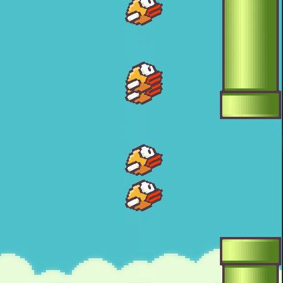

The ML approach to game solving
"Flappy Bird" is a side-scrolling game released in 2013, where the player controls a bird, and attempts to fly between green pipes without hitting them. Despite its simplistic mechanic and design, the game is renown for its high level of difficulty, and addictiveness. In this project, I recreated "Flappy Bird", and developed an AI algorithm that learns how to progress through the game endlessly, utilizing neural networks.
Images of the elements contained in the game was downloaded as .png files. When the game starts, the bird, pipe, and base objects are created, and the bird's collision with the obstacles is detected by the mask function provided by the pygame library. It detects the exact pixel locations of each element, and allows for specific overlap examinations between the bird, and its surrounding objects. To maneuver through the game, the bird may choose to jump at a fixed velocity, or fall by doing nothing. If the bird maneuvers between the incoming pipes successively, the player gains one point, wheras if the bird hits the top of the screen, the ground, or any of the incoming pipes, the game will end.
The neural network configuration was done through the neat library, and a config-feedforward.txt file. In respect to the feedforward file's specifications, the neat algorithm generates numerous variations of neural networks in design, until one with an acceptable fitness threshold is reached. To achieve such success, a generation of a fixed number of birds is sent, each varying in network structure, and saves the longest surviving bird within the generation. Each bird is encouraged to move forward, and move between the pipes, utilizing a fitness score, and an offset, which calculates the distance between the bird, and the incoming pipes. If all birds in the generation have died, the next generation commences. In the next generation, the most optimal birds of the previous generation are sent, some with mutations, and the process is repeated until there is a bird with a network design that seems to have perfected the problem at task. Utilizing this method, I was able to consistently achieve a bird that survives endlessly, within 4 generations.
(Since the game is so simple, it was actually possible to consistently achieve a "perfect" bird in one generation with a population size of 100. However, to demonstrate the progressiveness of the neat method, I chose a population size of 20.)